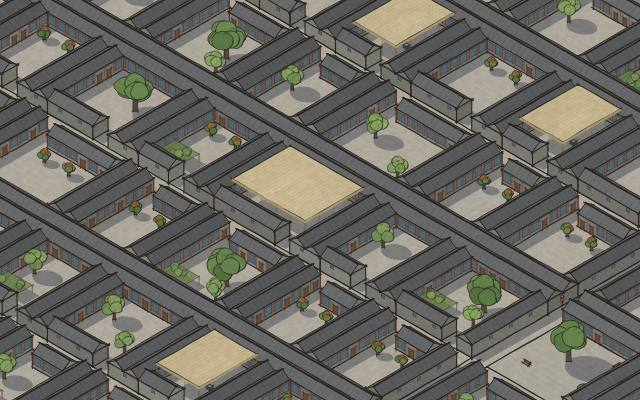
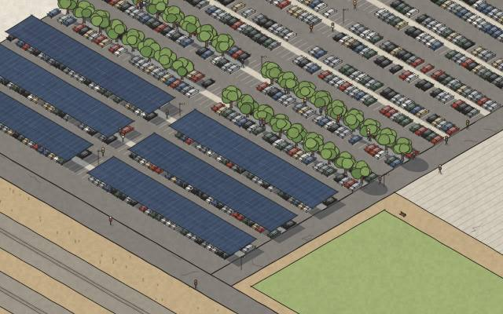
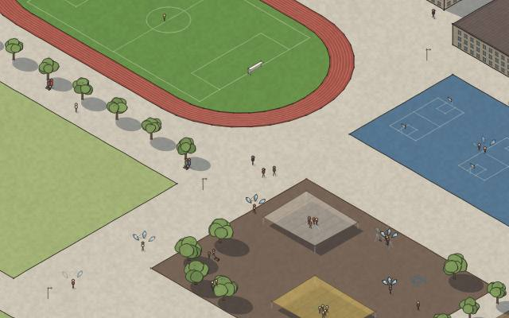

Thermal-Ink Atlas
Hand-inked city blocks that show urban heat through a heat-wave day. Each block is invented, not a real place, and its surface temperatures are simulated with a simple, cited energy-balance model. Each block is one offline HTML file.

Asphalt street vs pocket park
An old sunbaked street, one block from a shady lawn and pond.
Simulated block · invented geometry · modelled temperatures
Press T for heat, H for the hour.

Sponge-city and cool-roof retrofit
The same block before and after: cool and green roofs, permeable paving, rain gardens, young trees.
Simulated block · invented geometry · modelled temperatures
Drag the divider or press B; slide the days since rain.

Glass towers and street canyons
Deep streets shade by day and cool slowly at night; glass façades throw hot spots of reflected sun onto the street.
Simulated block · invented geometry · modelled temperatures
Switch the glass (clear, low-e, mirror) or press G.

Waterfront and wind corridors
Streets that point along the river wind stay breezier and cooler; the river cools only a short way, and the still pond is warm at night.
Simulated block · invented geometry · modelled temperatures
Press W for wind lines, A for the air overlay; calm or breezy.

Hutong lanes and courtyards
Low lanes stay in the sun at noon; trees, vines and the summer mat awning (天棚) give the shade, and an evening splash cools the paving for a few hours.
Simulated block · invented geometry · modelled temperatures
Press P to splash at 19:00; open the 天棚 card.

Car park and brownfield
Thick asphalt and concrete store the day's heat and give it back all night; the rusty sheds and the dry brownfield soil cool much sooner.
Simulated block · invented geometry · modelled temperatures
Press G at 23:00 for the night-release strokes; open the hot-car card.

Older high-rise estate
Rows spaced for two hours of winter sun leave the summer courtyards open to the midday sun; the AC condensers pour out heat the air here cannot feel.
Simulated block · invented geometry · modelled temperatures
Press S for the 大寒 shadows and C for the condensers; open the winter-spacing card.

School campus playground
Artificial turf and play rubber get 20–40 K hotter than grass; shade sails and trees cool them, watering the pitch only for minutes.
Simulated block · invented geometry · modelled temperatures
Press U for the burn limits and I to water the pitch at 14:00; open the children card.

Bus stops and footbridges
An opaque shelter roof takes about 34 K of Tmrt off the people waiting under it; in the late afternoon the low sun gets in from the side, and a west screen helps more than a bigger roof.
Simulated block · invented geometry · modelled temperatures
Press K for the waiting places and U for the burn flags; open the west-screen card.
References: every source behind the nine blocks, by block, with DOIs and reading status.